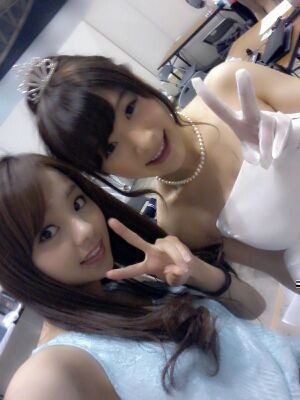
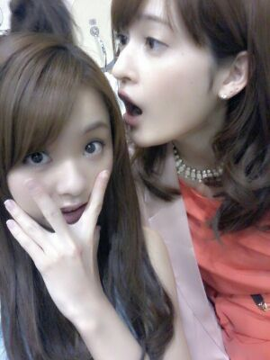

まんげーつの夜ぅ〜
どこか−ら−だろ−ぉお〜?
遠吠−えが〜♪ ohoh...
こんばむわ !
ろってぃ−だよ♪

ぁあぁあ。
2日後には第二回目
ついについにっ
プリンシパル公演が始まろうと
しています☆
最初は メンバー33人全員で
出れると思ってたんだけど...
美雲にせっちゃん
れなりん ゆきな みなみと
５人のメンバーが出れなく
なってしまいました(´；ω；｀)
美雲の卒業することへの
気持ちは 卒業する日がきた時に
改めてきちんと書きます。
とりあえず、まひろは
美雲の笑顔が大好きだった。
美雲がステージに立った時の
輝きが好きだった。
きらきらした瞳が好きだった。
頑張ってる美雲が好きだった。
ぁあ とまらん...
あかんあかん また改めて書くから(><)
とりあえず 美雲とは
ずっと一緒に居たから...。
上に貼った写真 すっごく
綺麗でしょ？ ドレス姿 *^ ^*
待ち受けにしようかなあ?☆ミ
それとそれと まさかの
メンバーであり
親友でもある せっちゃん !
足の怪我を負ってしまい
泣く泣く出れなくなる
doctor stop...(´ _`)
最初は 『まぢかぁぁ...(´_` )』
と思った。
けど プリンシパル後は
6thの制作が入る.そして
liveとか色々 !
今 治さないと 一緒に
liveが出れない。
この夏一緒に
「海行こなぁ〜ん(〃∨〃)」
とか どっか遊び行きたいね/
ってゆったのに
せっちゃんとどこも行けないのは
まひろヤダよ (´ - `)
だから もう今すごく
治療治すこと頑張ってるけど
本当に 少しでも早く
せっちゃんの足が完治することを
まひろは願ってる !
せっちゃん
そして せっちゃま部の皆さん !
まひろ せっちゃんの分まで
頑張る !
・・・・
涙をうるませながら
blogをうってる自分... (^-^)
食べられる ヤメテせちゃん♪

あと ゆきな に れな に みなみ...
この3人は 学業のためですね.
いや... ほんとに
完璧に両立することは
ほんっっっとに 大変だと思う。
出れなくなっちゃったこと
本当に辛いし悔しいと思う.
色んなキモチで
いっぱいだと思う.
まひろが偉そうに言えないけど
上手く表せないけど...
はいっ あのね、
お稽古終わってから
胃がチクチクするの
ずっと続いてて動けないの(> <)
助けてぇーん )))
とりあえず 1時間タイマー
かけて寝てみます(*´∨`*)
おやすみなさい(〃∨〃)
好きい♪//